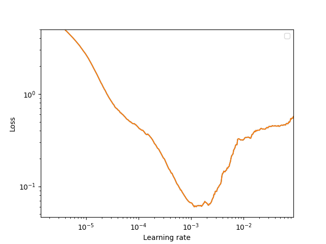

Train a force field from scratch#
This guide shows how to train a force field model from scratch using the NFFLr trainer from the command line.
We’ll focus on a small ALIGNN model trained on the mlearn Silicon dataset using a single GPU.
set up the environment
create configuration files
allocate an interactive GPU session and tune the batch size to maximize GPU utilization
finalize config and train
plot metrics
evaluate properties
environment#
initial configuration file#
Start with an initial configuration file config.py that defines the variables
args: the training arguments (nfflr.train.TrainingConfig)model: a force field model (nfflr.models.ALIGNNFFin this case)dataset: anfflr.AtomsDatasetconfigured to yield force field targets
The NFFLr trainer scripts will use py-config-runner to parse this configuration, so arbitrary python is allowed, and the required variables may appear in any order.
training configuration section#
In addition to the usual hyperparameters related to the actual optimization process (e.g., learning rate),
it can be important to enable asynchronous pre-computation of input representations by setting the diskcache argument
to a directory that (1) you have write permissions for and (2) is on a fast local filesystem, like a directory under /tmp
or a dedicated scratch partition if you’re running in an HPC setting.
Additionally setting a non-zero dataloader_workers will help reduce the latency of fetching batches of data during training.
If you’re using SLURM, make sure to request a large enough cpu allocation for the additional dataloader processes.
# config.py
from pathlib import Path
import nfflr
criterion = nfflr.nn.MultitaskLoss(
tasks=["energy", "forces"],
weights=[0.5, 0.5]
)
args = nfflr.train.TrainingConfig(
experiment_dir=Path(__file__).parent.resolve(),
random_seed=42,
dataloader_workers=4,
criterion=criterion,
epochs=100,
per_device_batch_size=8,
weight_decay=1e-3,
learning_rate=5e-4,
warmup_steps=0.1,
diskcache="/tmp/bld",
initialize_bias=True,
initialize_estimated_reference_energies=True,
)
...
model section#
When training ALIGNN models with large batch sizes, computation of the line graph (which is done on CPU) can become a bottleneck.
Since transform can be an arbitrary Callable, a straightforward way to mitigate this bottleneck is to wrap the base transform
in a custom function precomputed_line_graph_tuple.
Caution
Precomputed transforms must not include operations that require an autograd trace. This could introduce correctness issues for both training and autograd-based atomic force prediction. Precomputing neighbor lists is fine, but precomputing bond lengths or geometry-dependent basis functions is not.
# config.py (continued)
rcut = 4.5
transform = nfflr.nn.PeriodicRadiusGraph(cutoff=rcut)
model_cfg = nfflr.models.ALIGNNFFConfig(
transform=transform,
cutoff=nfflr.nn.Cosine(rcut),
local_cutoff=rcut,
atom_features="embedding",
reference_energies="trainable",
alignn_layers=2,
gcn_layers=2,
compute_forces=True,
)
model = nfflr.models.ALIGNNFF(model_cfg)
dataset section#
The dataset (mlearn Si) is specified last - it currently relies on explicit specification of the transform for asynchronous graph computation and the diskcache configuration:
# config.py (continued)
dataset = nfflr.data.mlearn_dataset(
elements="Si",
transform=model.transform,
diskcache=args.diskcache
)
tune batch size to maximize GPU utilization#
Next, we conduct some learning rate tests to
select a batch size that maximizes GPU utilization on the available hardware and
identify an appropriate learning rate (and potentially weight decay) setting for our dataset and batch size.
This is best done in an interactive session, running the learning rate finder in one window and monitoring the output of nvidia-smi in another.
If you’re running on a SLURM-based cluster, allocate an interactive session with one GPU:
srun --pty --partition=gpu --time=2:00:00 --gres=gpu:1 -c 4 bash
conda activate nfflr
nvidia-smi
+-----------------------------------------------------------------------------+
| NVIDIA-SMI 470.223.02 Driver Version: 470.223.02 CUDA Version: 11.4 |
|-------------------------------+----------------------+----------------------+
| GPU Name Persistence-M| Bus-Id Disp.A | Volatile Uncorr. ECC |
| Fan Temp Perf Pwr:Usage/Cap| Memory-Usage | GPU-Util Compute M. |
| | | MIG M. |
|===============================+======================+======================|
| 0 Tesla P100-PCIE... On | 00000000:5E:00.0 Off | 0 |
| N/A 37C P0 26W / 250W | 0MiB / 16280MiB | 0% Default |
| | | N/A |
+-------------------------------+----------------------+----------------------+
| 1 Tesla P100-PCIE... On | 00000000:86:00.0 Off | 0 |
| N/A 49C P0 30W / 250W | 0MiB / 16280MiB | 0% Default |
| | | N/A |
+-------------------------------+----------------------+----------------------+
This session has allocated a single P100 GPU with 16 GiB VRAM. The important fields are the memory utilization and volatile GPU utilization (both at zero here because no code is running on the GPU yet).
assessing GPU utilization#
For a given model configuration, GPU allocation, and batch size, the best training throughput should maximize the utilization of the GPU.
Run the learning rate finder, and monitor the output of nvidia-smi to assess the affect of changing the batch size.
nff lr config.py
Note
It’s nice to run these checks with gpustat running in a split-pane tmux window.
gpustat provides a convenient summary of the important GPU utilization stats,
and a 100 ms refresh rate typically gives a reasonable idea of the fluctations in GPU utilization.
tmux
[CTRL-b "] # split window vertically
python -m gpustat -i 0.1
[CTRL-b o] # switch panes
nff lr config.py

The batch size of 8 that we started with seems reasonable - GPU utilization is consistently around 100 %, and the memory utilization is hovering around 70 % of the available VRAM.
Now that we have this data point, there’s no need to run the learning rate finder to completion at this point. We can try doubling the batch size to 16 - in this case we find the GPU memory limit!

If we back off a bit to a batch size of 12, it seems to be reasonably stable with a memory utilization hovering around 90 % of available VRAM. It’s prudent to leave some head space, especially for datasets with high variability in the number of atoms in the training configurations, which can lead to spikes in memory utilization and out-of-memory woes during production training runs.

Note
If the compute utilization fluctuates a lot (especially if there are bursts of high and low utilization), this likely indicates that the dataloader (or some other CPU-bound process) cannot keep up with the GPU.
Try increasing the number of dataloader workers (4 per GPU is probably a reasonable max) and/or making sure the diskcache setting is configured to use a fast local filesystem. If the workload is still volatile, use the pytorch profiler to identify the bottleneck.
Now that we’ve identified a reasonable batch size that maximizes GPU utilization, run the learning rate test out to completion:
{kind=link}
Note
On such a small dataset this exercise is somewhat overkill, since the learning rate finder runs 400 iterations (25 epochs on this training set with a batch size of 12!). However, on large datasets the learning rate finder often completes in a fraction of an epoch.
Based on the learning rate test, let’s choose a peak learning rate of 5e-4. 1Running the learning rate finder over a range of weight decay settings can be a reasonable strategy for identifying reasonable settings for both the learning rate and weight decay.
production training run#
After finalizing these settings choices in the configuration file,
full configuration script (config.py)
# config.py
from pathlib import Path
import nfflr
criterion = nfflr.nn.MultitaskLoss(
tasks=["energy", "forces"],
weights=[0.5, 0.5]
)
args = nfflr.train.TrainingConfig(
experiment_dir=Path(__file__).parent.resolve(),
random_seed=42,
dataloader_workers=4,
criterion=criterion,
epochs=100,
per_device_batch_size=12,
weight_decay=1e-3,
learning_rate=5e-4,
warmup_steps=0.1,
diskcache="/tmp/bld",
initialize_bias=True,
initialize_estimated_reference_energies=True,
)
rcut = 4.5
transform = nfflr.nn.PeriodicRadiusGraph(cutoff=rcut)
model_cfg = nfflr.models.ALIGNNFFConfig(
transform=transform,
cutoff=nfflr.nn.Cosine(rcut),
local_cutoff=rcut,
atom_features="embedding",
reference_energies="trainable",
alignn_layers=2,
gcn_layers=2,
compute_forces=True,
)
model = nfflr.models.ALIGNNFF(model_cfg)
dataset = nfflr.data.mlearn_dataset(
elements="Si",
transform=model.transform,
diskcache=args.diskcache
)
launch a production training run with nff train config.py.
Once the training run completes, you can inspect the loss curves that are written to metric_history.pkl:
Show code cell source
from pathlib import Path
import torch
import nfflr
import einops
from dataclasses import dataclass
import matplotlib.pyplot as plt
%matplotlib inline
modeldir = Path("force-field-training")
h = torch.load(modeldir / "metric_history.pkl")
targets = ("loss", "mae_energy", "mae_forces")
n_epochs = len(h["train"][targets[0]])
epochs = 1 + torch.arange(n_epochs)
fig, axes = plt.subplots(nrows=3, sharex=True)
for target, ax in zip(targets, axes):
for phase in ("train", "validation"):
ax.plot(epochs, h[phase][target], label=phase)
ax.set_ylabel(target)
ax.loglog()
ax.legend()
axes[-1].set_xlabel("epochs")
plt.tight_layout()
plt.show()
/opt/hostedtoolcache/Python/3.10.13/x64/lib/python3.10/site-packages/tqdm/auto.py:21: TqdmWarning: IProgress not found. Please update jupyter and ipywidgets. See https://ipywidgets.readthedocs.io/en/stable/user_install.html
from .autonotebook import tqdm as notebook_tqdm
2024-02-21 21:25:42,519 INFO util.py:154 -- Missing packages: ['ipywidgets']. Run `pip install -U ipywidgets`, then restart the notebook server for rich notebook output.
2024-02-21 21:25:42,690 INFO util.py:154 -- Missing packages: ['ipywidgets']. Run `pip install -U ipywidgets`, then restart the notebook server for rich notebook output.
---------------------------------------------------------------------------
FileNotFoundError Traceback (most recent call last)
Cell In[1], line 12
9 get_ipython().run_line_magic('matplotlib', 'inline')
11 modeldir = Path("force-field-training")
---> 12 h = torch.load(modeldir / "metric_history.pkl")
13 targets = ("loss", "mae_energy", "mae_forces")
14 n_epochs = len(h["train"][targets[0]])
File /opt/hostedtoolcache/Python/3.10.13/x64/lib/python3.10/site-packages/torch/serialization.py:998, in load(f, map_location, pickle_module, weights_only, mmap, **pickle_load_args)
995 if 'encoding' not in pickle_load_args.keys():
996 pickle_load_args['encoding'] = 'utf-8'
--> 998 with _open_file_like(f, 'rb') as opened_file:
999 if _is_zipfile(opened_file):
1000 # The zipfile reader is going to advance the current file position.
1001 # If we want to actually tail call to torch.jit.load, we need to
1002 # reset back to the original position.
1003 orig_position = opened_file.tell()
File /opt/hostedtoolcache/Python/3.10.13/x64/lib/python3.10/site-packages/torch/serialization.py:445, in _open_file_like(name_or_buffer, mode)
443 def _open_file_like(name_or_buffer, mode):
444 if _is_path(name_or_buffer):
--> 445 return _open_file(name_or_buffer, mode)
446 else:
447 if 'w' in mode:
File /opt/hostedtoolcache/Python/3.10.13/x64/lib/python3.10/site-packages/torch/serialization.py:426, in _open_file.__init__(self, name, mode)
425 def __init__(self, name, mode):
--> 426 super().__init__(open(name, mode))
FileNotFoundError: [Errno 2] No such file or directory: 'force-field-training/metric_history.pkl'
evaluation#
For further evaluation, instantiate a force field model and load the model weights from the final checkpoint file
rcut = 4.5
model_cfg = nfflr.models.ALIGNNFFConfig(
transform=nfflr.nn.PeriodicRadiusGraph(cutoff=rcut),
cutoff=nfflr.nn.Cosine(rcut),
local_cutoff=rcut,
atom_features="embedding",
reference_energies="trainable",
alignn_layers=2,
gcn_layers=2,
compute_forces=True,
energy_units="eV"
)
model = nfflr.models.ALIGNNFF(model_cfg)
model.load_state_dict(
torch.load(modeldir / "checkpoint_100.pt", map_location="cpu")["model"]
)
<All keys matched successfully>
dataset = nfflr.data.mlearn_dataset("Si", transform=model.transform)
/Users/bld/projects/nfflr/nfflr/atoms.py:84: UserWarning: To copy construct from a tensor, it is recommended to use sourceTensor.clone().detach() or sourceTensor.clone().detach().requires_grad_(True), rather than torch.tensor(sourceTensor).
self.positions = torch.tensor(positions, dtype=dtype)
Show code cell content
@dataclass
class FFOutput:
energy: torch.Tensor
forces: torch.Tensor
force_ps: torch.Tensor
def collect_results(ids):
e_ref, e_pred = [], []
f_ref, f_pred = [], []
for _id in ids:
inputs, reference = dataset[_id]
y = model(inputs)
e_ref.append(reference["energy"].item())
e_pred.append(y["energy"].item())
f_ref.append(reference["forces"].detach())
f_pred.append(y["forces"].detach())
e_ref = torch.tensor(e_ref)
e_pred = torch.tensor(e_pred)
f_ref, f_ps = einops.pack(f_ref, "* d")
f_pred, f_ps = einops.pack(f_pred, "* d")
ref = FFOutput(e_ref, f_ref, f_ps)
pred = FFOutput(e_pred, f_pred, f_ps)
return ref, pred
ref_t, pred_t = collect_results(dataset.split["train"])
ref_v, pred_v = collect_results(dataset.split["val"])
/Users/bld/.pyenv/versions/3.10.9/envs/nfflr/lib/python3.10/site-packages/dgl/backend/pytorch/tensor.py:445: UserWarning: TypedStorage is deprecated. It will be removed in the future and UntypedStorage will be the only storage class. This should only matter to you if you are using storages directly. To access UntypedStorage directly, use tensor.untyped_storage() instead of tensor.storage()
assert input.numel() == input.storage().size(), (
/Users/bld/.pyenv/versions/3.10.9/envs/nfflr/lib/python3.10/site-packages/dgl/backend/pytorch/tensor.py:445: UserWarning: TypedStorage is deprecated. It will be removed in the future and UntypedStorage will be the only storage class. This should only matter to you if you are using storages directly. To access UntypedStorage directly, use tensor.untyped_storage() instead of tensor.storage()
assert input.numel() == input.storage().size(), (
The parity plots for both train and validation splits look reasonable:
Show code cell source
fig, axes = plt.subplots(ncols=2, figsize=(8,4))
plt.sca(axes[0])
per_atom = True
nt = torch.tensor(ref_t.force_ps).flatten()
nv = torch.tensor(ref_v.force_ps).flatten()
ct = "k"
cv = "m"
if per_atom:
plt.scatter(ref_v.energy / nv, pred_v.energy / nv, label="val", c=cv)
plt.scatter(ref_t.energy / nt, pred_t.energy / nt, label="train", c=ct, alpha=0.1)
plt.plot([-5.5, -4.5], [-5.5, -4.5], linestyle="--", color="k");
plt.xlabel("$E_{ref}$ (eV/at)", size=14)
plt.ylabel("$E_{pred}$ (eV/at)", size=14);
else:
plt.scatter(ref_v.energy, pred_v.energy, label="val", c=cv)
plt.scatter(ref_t.energy, pred_t.energy, label="train", c=ct)
plt.plot([-500, 0], [-500, 0], linestyle="--", color="k");
plt.xlabel("$E_{ref}$ (eV)", size=14)
plt.ylabel("$E_{pred}$ (eV)", size=14);
plt.sca(axes[1])
plt.scatter(ref_v.forces, pred_v.forces, c=cv, label="val");
plt.scatter(ref_t.forces, pred_t.forces, c=ct, label="train", alpha=0.01);
fmax = 10
plt.plot([-fmax, fmax], [-fmax, fmax], linestyle="--", color="k");
plt.axvline(0, color="k", linewidth=0.5)
plt.axhline(0, color="k", linewidth=0.5)
plt.xlabel("$F_{ref}$ (eV/Å)", size=14)
plt.ylabel("$F_{pred}$ (eV/Å)", size=14);
plt.legend()
# plt.ylim(-fmax, fmax)
plt.tight_layout()
plt.show()
And the mean absolute force errors are around 0.06 eV/Å on the validation set:
torch.mean(torch.abs(pred_t.forces - ref_t.forces))
tensor(0.0456)
torch.mean(torch.abs(pred_v.forces - ref_v.forces))
tensor(0.0645)
However, force error distributions are often long-tailed, and it helps to inspect the empirical error cumulative distribution for the force magnitudes:
Show code cell source
def error_ecdf_plot(inputs, targets, quantiles=[0.5, 0.8, 0.95], annotate=True, label=None):
ax = plt.gca()
_y = np.arange(0, 101)
ecdf = np.percentile((inputs - targets).abs(), _y)
ax.plot(ecdf, _y/100, label=label)
ax.set_ylim(0, 1.0)
if not annotate:
return ax
for q in quantiles:
v = np.percentile((inputs - targets).abs(), 100 * q)
ax.plot([1e-16, v], [q, q], linestyle="--", color="k")
ax.annotate(f"{v:.03f}", xy=(1.3 * v, q), va="center")
fig, ax = plt.subplots(figsize=(5,3))
error_ecdf_plot(torch.norm(ref_t.forces, dim=-1), torch.norm(pred_t.forces, dim=-1), annotate=False, label="train")
error_ecdf_plot(torch.norm(ref_v.forces, dim=-1), torch.norm(pred_v.forces, dim=-1),label="val")
ax.semilogx()
ax.set_xlim(1e-7, None)
ax.set_xlabel("force norm error (eV/Å)");
ax.set_ylabel("probability")
ax.legend(loc="lower right");
And the raw force components themselves:
Show code cell source
fig, ax = plt.subplots(figsize=(5,3))
error_ecdf_plot(ref_t.forces, pred_t.forces, annotate=False, label="train")
error_ecdf_plot(ref_v.forces, pred_v.forces,label="val")
ax.semilogx()
ax.set_xlim(1e-7, None)
ax.set_xlabel("force component error (eV/Å)");
ax.set_ylabel("probability")
ax.legend(loc="lower right");